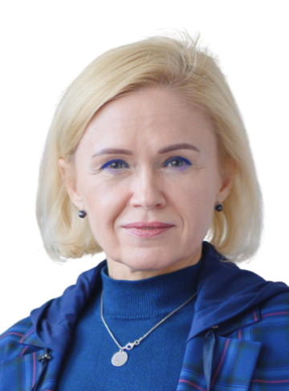
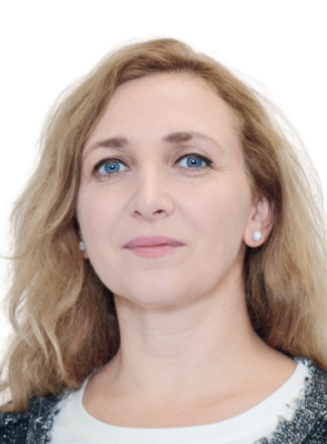

Преподаватели

Олег Бакун
DBA, корпоративный директор, эксперт в области стратегического управления и проектов преобразований Корпоративное управление. Более 13-ти лет опыта работы в 25-ти советах директоров на должностях Председателя комитета по стратегии, Председателя совета директоров, советника Председателя СД, Старшего независимого директора. Реализация проектов внедрения системы Корпоративного управления и повышения эффективности работы СД. Отраслевая экспертиза. Торговля, девелопмент, производство FMCG сектора, управленческое консультирование.
Андрей Гершун
Управляющий партнер МАГ КОНСАЛТИНГ Профессиональный консультант с 30 летним опытом работы в области управленческого учета, МСФО, бюджетирования, стратегического консалтинга, построения сбалансированной системы показателей, ключевых показателей эффективности KPI, построения системы управления организацией, управления изменениями, организационного дизайна, реинжиниринга бизнес-процессов, систем мотивации, корпоративного управления, внедрения ERP- и BI-систем Руководил и участвовал более чем в 200 проектах управленческого консалтинга Старший преподаватель программ MBA и EMBA в МИРБИС, НИУ ВШЭ и РАНХиГС по стратегическому менеджменту, управлению эффективностью, управлению изменениями. Автор популярных книг и пособий по стратегическому менеджменту.

Татьяна Нистратова
МВА, консультант по организационному развитию, бизнес-тренер, Executive-коуч. Генеральный директор ООО «Новые технологии», ООО «АМТ» Сертифицированный в EACEIP тренер и тьютор по эмоциональному интеллекту. Имеет более 25 лет опыта работы бизнес-тренером и многолетнюю практику в качестве коуча и консультанта для таких компаний, как Сбербанк, РЖД, Лукойл, JTI Petro, Marvel, Pfizer и многих других. Общий стаж управленческой деятельности - более 15 лет.

Ольга Малиновская
(PhD/DPhil, Oxon) выпускница Оксфордского университета, Университета Сорбонны (МА), Кларк университета (МА), Северо-восточного университета в Бостоне (BA). Является обладателем диплома в сфере бизнес-администрирования Associate Degree Quincy College. Имеет богатый опыт работы в бизнес-структурах («Бостон Консалтинг» USA, «Герсон» London, UK), а также преподавательский и административный опыт в высших учебных заведениях США, Франции, Испании и Великобритании. В РАНХиГС с 2019 года заведует кафедрой гуманитарных дисциплин.
Михаил Фридман
Доктор философских наук, кандидат педагогических наук, профессор РАНХиГС при президенте РФ, академик Международной академии информатизации в генеральном консультативном статусе ООН, член Зиновьевского клуба МИА «Россия сегодня», бизнес-тренер, коуч, консультант.
Ирина Чеканава
(PhD/DPhil, Oxon) выпускница Оксфордского университета, Университета Сорбонны (МА), Кларк университета (МА), Северо-восточного университета в Бостоне (BA). Является обладателем диплома в сфере бизнес-администрирования Associate Degree Quincy College. Имеет богатый опыт работы в бизнес-структурах («Бостон Консалтинг» USA, «Герсон» London, UK), а также преподавательский и административный опыт в высших учебных заведениях США, Франции, Испании и Великобритании. В РАНХиГС с 2019 года заведует кафедрой гуманитарных дисциплин.